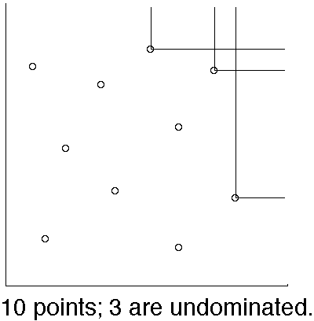
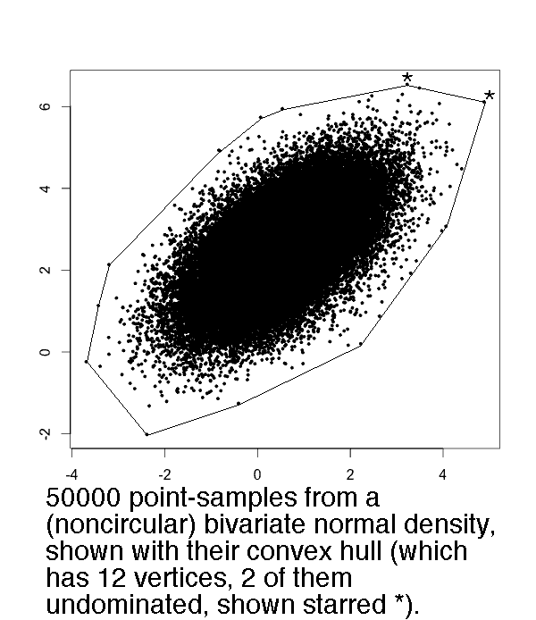
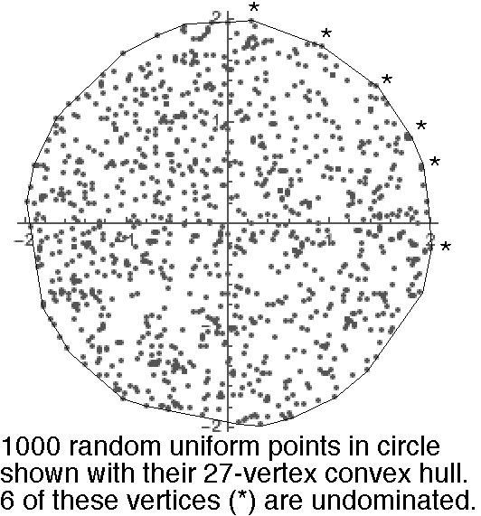
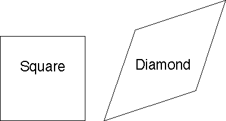

Warren D. Smith. Nov 2015.
Abstract. One way to design a multiwinner voting system is to define a "quality function" Q which examines the votes, voters, candidates, and winner-set, and outputs a number. Then the "optimum voting system" would simply be to choose the winner-set maximizing Q. (Actually, we here sometimes will find it more convenient to minimize Q in which case it would better be called a "penalty function.") The previous paper had defined an infinite number of quality functions whose maximization could be shown to automatically yield "proportional representation" (PR). We now investigate further. We find there are two natural classes of PR-yielding quality functions. The previous paper's class were all (what I will now call) linear and they yield PR when a certain function inside of them has logarithmic nature, such as the digamma function Ψ(x). The second class, which I will now call nonlinear, yields PR when a certain other function inside of it behaves like the reciprocation function 1/x. The voting systems arising via extremizing these two classes of quality function correspond respectively to two rival philosophies of PR, dating to T.N.Thiele and L.E.Phragmen in 1895.
The good news is that via nonlinearity we can force a stronger kind of PR (wanted by Toby Pereira): in elections involving only "maximally-racist colored" voters and candidates, plus "commonly rated uncolored candidates," the colored part of the parliament should automatically duplicate the color-composition of the electorate. The bad news is that the price we pay for that is failure of "monotonicity" – and the benefits of strong PR seem not worth that heavy a price! The previous paper's "linear" quality functions failed to achieve strong PR but did provide monotonicity. No voting system based on a continuous smooth quality function and obeying both strong PR and monotonicity (the "holy grail"), is currently known. If the Phragmen and Thiele philosophies are too irreconciliable, then the holy grail could not exist. The holy grail existence problem seems to us to be the most important theoretical open question in this field.
If the holy grail does not exist, the question becomes: what is the best multiwinner voting system we can devise, which comes as close to the holy grail as possible? At the end of the paper, we propose an answer.
Let C=#candidates, V=#voters, W=#winners, 0<W<C, and in most real-world applications C≪V. Let Sv,c be the real-valued score given by voter v to candidate c on her ballot. Let Tc=∑1≤v≤VSv,c be candidate c's summed score. Then here is a simple class of quality measures Q:
where L{z} and R(v) are real-valued functions of real argument specified by the voting system designer.
I am calling these quality measures "nonlinear" if R(v) is a nonconstant function. [The reason for this name is that if R were just a constant, then the inner sum would be a linear function of the scores Sv,c. I had called the resulting quality functions "linear" in the previous paper. In making this name I have abused terminology slightly, because it would have been more technically correct to call them nonlinear if R(v) is nonconstant and L(u) is nonlinear. Truly-linear quality functions cannot yield PR.]
We shall sometimes want to minimize Q, in which case it is better termed a "penalty" function rather than a "quality" function.
Let us enquire when these systems will yield proportional representation (PR).
The most basic kind of PR is the demand that if all voters and candidates are "colored" and if the voters are "maximally racist" – i.e. they always score candidates 1 when the same color as the voter, and 0 otherwise – then, provided enough candidates of each color are available, the elected parliament will have the same color-composition as the electorate (up to small errors forced by demanding electing integer numbers of candidates, and provided enough candidates of each color run – obviously it is not possible to elect 5 Reds if only 2 run).
Let Xj be the number of color-j voters, and Wj the number of color-j
winners.
So if we ignore integrality, PR means that Wj will be proportional to Xj
when
If we assume the functions L{z} and R(v) are smooth, then by the "method of Lagrange multipliers" our simple Q will be extremized by choice of the Wj subject to that constraint, when all the
We now shall see that there are remarkable advantages got by either making R(v)=1/v be the reciprocation function or L{z}=log(z) be a logarithm function (but not both simultaneously).
Throughout the rest of this section we shall assume that L and R are smooth and ignore issues of integrality.
Reciprocation⇒PR Theorem: If L{z} is either always strictly concave-∪ or always strictly concave-∩, and R(v)=1/v, then the above basic-PR condition will automatically be satisfied at, and only at, any local extremum of our simple quality functions Q.
Proof: it then is just
which if Wj/Xj=K
is a constant is just
It is quite remarkable that by making R(v)=1/v we obtain PR pretty much regardless of L. Note that for concave-∪ L{z} the voting method needs to minimize Q, whereas for concave-∩ L{z} it needs to maximize Q.
Shifted reciprocation: R(x)=1/(x+Δ) where Δ is any positive constant, can also be used with then a slightly altered definition of "proportionality." Presumably -1 < Δ < 2V/W would be approximately the range of interest where V is the number of voters, W is the number of winners, and we assume the scores on ballots lie within the real interval [0,1].
Incidentally, Jameson Quinn independently thought of the same (or, at least, I think it is the same) idea I am calling a "shift" Δ, except that he labeled it with the more imaginative name "ghost voters." We'll explore this more later.
On the other hand, if we do not employ the reciprocation function, then
Logarithm⇒PR Theorem: If vR(v) is either always increasing or always decreasing, and L{z}=log(z) is a logarithm function, then our basic-PR condition will automatically be satisfied at, and only at, any local extremum of our simple quality functions Q.
Proof: the basic PR condition is satisfied if L{z} obeys the differential equation
if K is a constant. Letting x=vR(v), this differential equation has solution
where Z is a constant. But the basic-PR condition will in general be violated if L does not obey that differential equation. Q.E.D.
These two theorems hold under mutually exclusive assumptions.
The previous paper had already analysed
the simplest logarithm
case [when R(v)=constant], finding that when issues of integrality were also considered,
that the logarithm function was better replaced by "psi functions," which
are not quite the same as logarithms, albeit they still are
asymptotically logarithmic
[
Note re approximate functions. I said that L(z) functions that are "log-like" or R(v) that "behave like" the reciprocation function 1/v could be made to yield PR. What does this mean more precisely? If L(z) approximates ln(z) in the sense that F(z+δ)=ln(z) for some |δ| upperbounded by a constant, then that suffices to yield PR (at the continuum optimum) with within ±constant additive error in the number of seats of any given color [at least in the simplest case R(v)=constant]. For example the digamma function Ψ(z) enjoys this ln-approximation property for all z>0. Similarly if R(x+δ)=1/x for some |δ| upperbounded by a constant number of "Hare quotas" V/W, then that again suffices to yield PR at the continuum optimum to within ±constant additive error in the number of seats of any given color [at least when L(z)=zμ for any fixed μ>0 with μ≠1].
Scale invariance theorem: If all scores for all candidates on all ballots are scaled by some overall positive factor K, the "extremize Q" voting methods with R(v)=1/v will return the same winner-sets, and relative ordering among potential winner-sets, regardless of K.
Proof: with R(v)=1/v the quality function Q depends solely on the ratios Sv,c/Tc, which are unaltered by changing K. Q.E.D.
Meanwhile the systems arising from L{z}=log(z) generally will not enjoy scale invariance.
Stronger kind of proportionality: If all voters are "colored," but candidates can be either colored or uncolored; and each voter awards any colored candidate score 1 if the voter and candidate colors agree, otherwise 0; and each voter awards each uncolored candidate a score that is a function solely of the name of that candidate and not on the voter; then the "extremize Q" voting methods arising from R(v)=1/v will elect a parliament whose color composition (ignoring the uncolored MPs) duplicates the electorate's.
Proof: under our modeling assumptions the inner sum in the definition of our simple quality function will be additively offset by some amount not depending on the Wj, but instead only on the scores for the uncolored candidates (which by assumption also are voter-independent). Since our proof of the Reciprocation Theorem does not care about L{z} provided L''{z} has constant sign, these additive offsets do not matter. Specifically the Lagrange mutiplier condition for extremizing Q is that
which if Wj/Xj=K
is a constant is just
Meanwhile the systems arising from L{z}=log(z) generally will not enjoy this stronger kind of proportionality.
Failure of monotonicity:
If L{z} is either always strictly concave-∪ or always strictly concave-∩,
and
R(v)=1/v,
then there will always exist election examples in which Q is "nonmonotonic" meaning
that if some one voter Y infinitesimally alters her score for some one candidate X
– in which case the Q values for X-omitting parliaments will be unaltered, but
the
Proof sketch. I won't state a full proof, but it is not difficult to see. If, say, L always increases then the term involving SYX increases when SYX does (good), but all the other terms involving TX decrease (bad). If L'' has constant sign then the decrease can be made to outweigh the increase by devising voter Y and all the other (non-Y) voters appropriately. (There also are other cases, but the reasoning is analogous.)
Incidentally, the "ghost voters" idea cannot save us from nonmonotonicity in general, although there are specific election situations in which it can.
In contrast, the previous paper's "linear" quality functions had automatically, and obviously, yielded monotonic voting systems.
The previous paper had shown the usefulness of the "Kotze-Pereira transform." We repeat its definition: Replace any ballot which rates the C candidates with scores
by these C weighted approval (meaning with {0,1}-scores only) ballots
| (1,1,1,...,1,1) | with weight SC |
| (1,1,1,...,1,0) | with weight SC-1-SC |
| ... | |
| (1,1,0,...,0,0) | with weight S2-S3 |
| (1,0,0,...,0,0) | with weight S1-S2 |
Note: the candidates were ordered by decreasing scores on the ballot under consideration. That assures that all the weights come out positive. For example, the score ballot (9,5,3) in a three-candidate election would be replaced by
This "replacement of score ballots with weighted approval ballots" idea was invented by Toby Pereira. A "ballot with weight w" is to be interpreted the same as "w voters cast that ballot." This transform converts a voting method into a different voting method.
"PR stays PR" Theorem. If the original method obeys basic proportionality, then the Pereira-transformed one will too.
Proof: Because the transform does not change anything for "maximally racist" voters, since they already had voted in "all 1s and 0s" scoring style. Q.E.D.
If we apply the Kotze-Pereira transform to the "extremize Q" multiwinner voting method above, the result is as follows.
Let c[j,v] denote the candidate c, among the W winning c only, such that sv,c is the jth greatest. Also for convenience let c[W+1,v]=C+1 and Sv,C+1≡0. Then choose the W-winner set which extremizes this new quality function
Single-winner case is plain score voting Theorem. These new Pereira-transformed methods reduce in the single-winner case (W=1) to plain score voting. This is because when W=1 we have
which is a function purely of candidate-c's summed score Tc. Extremizing Q by choice of the winner c is therefore the same thing as plain score voting, i.e. choosing the winner with maximum Tc, provided either
Meanwhile, the original voting method (before Kotze-Pereira transform) would in the single-winner case elect the candidate c extremizing
which usually would not be the same thing as extremizing Tc. (And the previous paper's "psi voting" is not identical to score voting in the single winner case, albeit it is equivalent to score voting under a morphism of the scores, and "harmonic voting" does reduce to score voting in the W=1 case.)
Scale Invariance Invariance Theorem. The Kotze-Pereira transforms of the Q-extremizing R(v)=1/v scale-invariant voting systems still are scale invariant provided that when z is scaled by a constant factor, L{z} changes by another constant scaling factor. I.e. if L{z}=zμ is a fixed power of z, with μ≠1.
Proof. Scale invariance is obvious from the formula stated for the new transformed qulaity function; the reason for our demand μ≠1 is so that L(z) will be strictly concave-∪ or concave=∩ everywhere for all z>0. Q.E.D.
PR with an uncolored universally top rated candidate Theorem. If all voters are "colored," all candidates are either colored or uncolored; and each voter awards any colored candidate score 1 if the voter and candidate colors agree, otherwise 0; and each voter awards each uncolored candidate the top score 1; then our "extremize Q" voting methods arising from R(v)=1/v will elect a parliament whose color composition (ignoring the uncolored MPs) duplicates the electorate's; and this is true either before or after a Kotze-Pereira transform.
Proof: Because all votes are approval-style already, the Kotze-Pereira transform has no effect. And then this theorem is just a special case of the already-proven "stronger kind of proportionality" displayed by "extremize Q" voting methods arising from R(v)=1/v. Q.E.D.
PR with an uncolored commonly rated candidate Theorem. If all voters are "colored," all candidates are either colored or uncolored; and each voter awards any colored candidate score 1 if the voter and candidate colors agree, otherwise 0; and each voter awards each uncolored candidate a score depending only on the candidate and not on the voter; then our "extremize Q" voting methods arising from R(v)=1/v will elect a parliament whose color composition (ignoring the uncolored MPs) duplicates the electorate's; and this is true either before or after a Kotze-Pereira transform.
Proof: The "before" is the previous "stronger kind of proportionality" theorem. The "after" claim arises as follows. A candidate with common rating K is Pereira-transformed to common rating 1 (ballots weighted K) and common rating 0 (ballots weighted 1-K). More precisely: after transform, all ballots are approval style, and the only kinds of ballots are those approving the candidates of one color only, plus some subset of the uncoloreds. And each color-class approves and disapproves each uncolored in fixed percentages depending only on the uncolored candidate. Let U be the set of uncolored candidates who win. Referring back to the definition of our quality function, we again see by essentially the same argument about "constant offsets" as in our proof of the previous strong PR theorem that the colored part of the parliament will necessarily exhibit PR when Q is extremized. (There actually will be several different constant offsets if there are several uncolored winners, but this does not matter.) Q.E.D.
Major flaw in our R(v)=1/v systems before Kotze-Pereira transform: Consider the following score ballots in a 20-voter, 6-candidate, 2-winner election
10 voters: A=1, B=1, C=1, D=0, E=0.2, F=0.2 10 voters: A=1, B=1, C=0, D=1, E=0.2, F=0.2
All the following election results would have equal "best quality" as perceived by these systems: AB, CD, EF. This is despite our clear perception – which the previous paper's systems agree with – that AB is the uniquely best winner-duo. This election example was proposed by Toby Pereira.
Let R(v)=1/v and L{z}=zμ where the power μ is a constant.
Both these systems should enjoy proportionally (even in the strong kind where commonly-rated candidates exist), scale invariance, and in the single-winner case W=1 reduce to plain score voting.
Here, to hopefully make these systems clearer, is a simple worked election example. Let the candidates be named A,B,C,D. Let the votes be
#voters Their vote
51 A=1, B=1, C=1, D=0
49 A=0, B=0, C=0, D=1
With system I, using squareroot, we have on this example
With system II we have
Remark (Ebert & Variance):
The reason for naming system II "PerEbert" is that
Toby Pererira invented the
Kotze-Pereira transform,
while Bjarke Dahl Ebert, in a 2003 internet
post,
invented the idea
of electing the parliament that minimizes (in his terminology)
the "sum of squared loads." To explain that:
in a multiwinner election based on approval-style
ballots, each MP who is elected with A approvals, is regarded as imposing a "load" of
1/A on each voter who approved him – i.e. total load 1, equidistributed among
all A of his supporters. The "total load" on voter v then is
And this is the special case of our cost function when μ=2.
We now point our that the power μ=2 enjoys one especially nice property that no other
μ (≠2) enjoys:
By using the well known
This actually is a disguised form of the Pythagorean theorem; a more general version of it is called the Huygens-Steiner theorem, and another generalization pointed out by Adam Goucher is thatE(|X - E(X)|2 + |Y - E(Y)|2) + |E(X) - E(Y)|2 = E(|X - Y|2) where X and Y are arbitrary independent random variables on an arbitrary inner product space and E is the "expectation" operator. Ourvariance + mean2 = meansquare identity is the special case Y≡0 of Goucher. Goucher's identity may be proven by expanding both sides.
Ebert's cost function may be rewritten as
where the mean load, among the loads carried by each of the V voters, is
while the variance among the loads carried by each voter, is
And if the number of voters V and the number of seats in parliament are fixed, this tells us that minimizing Ebert's "sum of squared loads" cost-function (which is the same as our own cost function in the special case μ=2) is equivalent to minimizing the variance among the loads carried by each voter.
And this in turn makes it clear why minimizing Ebert's cost function strives to equalize all voter-loads, thus seeking the ideal of "proportional representation." (In a racist-voting scenario, each voter having an equal load would correspond to perfect PR.)
Remark (Rather weak rationale for the name "PerPhrag"): I named this after Toby Pereira and Lars Edvard Phragmén, since the voting method first applies the Kotze-Pereira transform to the original score-style ballots to convert them to a set of weighted approval-type ballots, and then elects the parliament maximizing our quality function based on the power μ=1/2. The latter bears some mild resemblance to ideas advanced by Phragmén in 1895. Actually Phragmén never actually suggested this, nor even the idea of optimizing any quality function, but I needed to have some name, so I chose "PerPhrag."
In this section we'll point out that the voting methods from the preceding section, when the power μ is an integer with μ≥2 (for example the "PerEbert" system with μ=2), obey an interesting new proportionality property. This whole section may be skipped in the sense that its result is not used by the rest of the paper. Consider, for approval-style ballots, the following coin-flip approval transform (CFAT). For any ballot approving A candidates, transform it to 2A weighted ballots, each approving a different subset of those A. The weights arise by tossing a b-biased coin to decide whether to approve each candidate. That is, the weight for a ballot approving some particular Z among the A candidates, will be
where
The whole coin-flip approval transform idea was invented by Toby Pereira in the unbiased-coin case b=0.
Let party k run Ck candidates and have Vk voters and get Wk winners. Suppose each voter approves her party's candidates and disapproves all rival party's. The "sum of squared loads" PerEbert quality function (with μ=2) for the party-k winners and party-k voters is (without the CFAT)
The reason this yields PR is that if we minimize
by choice of the Wk subject to ∑k Wk = W = total #seats being held fixed, then the answer (by method of Lagrange multipliers) is
i.e, proportionality. The sum of squared loads for each party-k winner among party-k voters is (now with the CFAT)
This binomial sum may be evaluated in closed form (by, e.g. automated methods described in the Petkovsek-Wilf-Zeilberger book, and by the commercial software Mathematica):
For any fixed b with
by choice of the Wk subject to ∑kWk=W being held fixed, yields (by the method of Lagrange multipliers)
where the linear is the derivative of the quadratic.
This is a form of proportionality, albeit with the party seat-counts Wk
each shifted by some additive constant.
E.g, in the unbiased coin case b=0, the shift is half a seat, i.e. this
proportionality would ask that
½+Wk,
rather than Wk, be proportional to Vk.
(And this half-shift would convert PerEbert from
"Sainte-Laguë to d'Hondt style proportionality,"
roughly speaking, as was first pointed out semi-empirically by Toby Pereira.)
For general bias b the shift instead is
That argument had employed a closed-form sum arising from the power μ=2, i.e. the "PerEbert" voting method. However, the sum
actually can be done in closed form for any fixed integer μ≥0, which tells us that all the corresponding voting methods arising from integer powers μ≥2, could be proven to enjoy a theorem that the CFAT does not affect their claim to provide "basic proportional representation" – aside from effects like our "additive shift" which cause bounded additive errors in each party's seat counts.
This all is an interesting fact. It may or may not be a useful fact.
Closer connection to Sainte-Laguë: The PerEbert (μ=2) method with shift Δ=0 actually is exactly the same in "racist voting" basic-PR election scenarions, as the Sainte-Laguë party-list voting method, or equivalently Webster's apportionment method. (See the book by Balinski & Young for more about those.) This is because of a theorem stated without proof on page 964 of Owens 1921 about how "method W" (Webster) globally minimizes the "total injustice" (equivalent to minimizing the PerEbert cost function). This theorem also had independently been found (with a proof!) by Andre Sainte-Laguë in 1910, and was stated with a different proof on pages 103-104 of the book by Balinski & Young 1982. Further investigation suggested the following is a (new)
Least Squares Theorem: Consider this party-list voting method: if party k gets Vk votes, then award it Wk=⌈VkQ-d⌉ seats, where the offset d with 0≤d≤1 is a pre-specified constant and where Q>0 is chosen so that the total number W=∑kWk of seats equals the desired value. (The case d=½ is the Webster=Sainte-Laguë method; if d=0+ it is the method of Adams; and if d=1- it is Jefferson=d'Hondt. See Balinski/Young 1982 for further discussion of all these classical methods.) Then: the seat-counts Wk automatically will globally minimize ∑k (Wk+d-½)2/Vk over all possible tuples of nonnegative integers Wk summing to W.
This is the Sainte-Laguë/Owens theorem in the case d=½, but for other d it is new. I had already proven this theorem in 2007 as a consequence of Lemma 7.1 (p.117), lemma 6.1 (p.94) and theorem 6.1 (p.95) in the book by Grilli di Cortona et al 1999, except that at the time I was not completely sure that I believed those claims in that book. Hence in 2016 I subjected the present theorem to extensive computer checking. It failed to find any counterexample. I then realized that the simpler and older arguments in Sainte-Laguë 1910 and in p.103-104 of Balinski/Young 1982 both straightforwardly generalize to prove the present theorem. (Both pertained only to the case d=½, but one simply goes through their same arguments redoing them for arbitrary d.) In the meantime Toby Pereira in 2016 also re-invented a proof very similar to the one in Balinski/Young (albeit Pereira only concerned himself with the d'Hondt case d→1). Sainte-Laguë's argument is based on electing candidates one at a time as described in wikipedia's description of his voting method; then arguing that each additional seat-filling increases the cost function by the least possible amount. (No matter when you stop, the resulting parliament is optimal for whatever seat-count it has. Incidentally, our "Ebert cost function" in the racist-voter-behavior subcase has also been called the "Sainte-Laguë disproportionality index," e.g. by Gallagher 1991 who ends up recommending Sainte-Laguë over various other PR notions, as also does Benoit 2000.) The Balinski/Young and Pereira arguments are based on considering pairs of political parties. Any parliament other than the ones generated by our party-list voting method, is argued to contain some pair of parties such that the cost function is reducible by transferring seats from one party to the other.
Was Sainte-Laguë's original "proof" in 1910 adequate? A possible problem is that his argument was "greedy." Each successive seat addition considered by itself is optimal, but is is conceivable that the cost function might be reducible by making some non-greedy seat-additions in the hope that later additions could enjoy smaller costs. Well, Sainte-Laguë did not discuss this issue directly, but the cost-change formula he gave makes it clear this difficulty cannot happen.
Were the party-pair-based "proofs" by Balinski/Young 1982 (also thought of by Pereira in 2016), adequate? Also yes. We want to argue that any interparty transfer of seats will increase the cost function. I.e. consider two subsets of parties A and B, and we move seats from A into B. To show this, go through the parties in A one by one. We claim the cost formula is such that: Each seat transfer from the first A-party will increase the cost function. Then each seat transfer from the second A-party will increase the cost function. Then each seat transfer from the third A-party will increase the cost function. ... And so on inductively. So the net effect of all transfers in succession is to increase the cost function. Q.E.D.
It follows from the Least Squares Theorem that the CFA transform of the PerEbert (μ=2) method with shift Δ=0 actually exactly yields d'Hondt proportionality in "racist voting" situations if fair coins (b=0) are used. More generally, if bias-b coins are used, then it exactly yields proportionality of the sort in this theorem with offset d=½+(½-b)/(1+2b).
For the PerEbert voting method based on power μ, using "shift" Δ, the Q formula is
Let us now explore the nature of the proportionality delivered by the resulting voting system. Consider a "racist voting" situation where party k runs Ck candidates and has Vk voters and gets Wk winners. Then
Extremizing Q by choice of the Wk subject to ∑kWk=W being held fixed, yields (by the method of Lagrange multipliers)
Equivalently
If we expand the right hand side in a series in powers of Δ, then neglect all but the leading two terms, we find
Since the proportionality constant is W/V, this equivalently may be written
This makes it clear that Δ of the same order as V/W will yield additive alterations in each party's seat-counts, of order 1 seat. Due to the neglected terms (indicated by "...") in the series, these alterations do not correspond exactly to previous notions of proportionality such as d'Hondt. But they do correspond approximately in a limit where each party has a large number of seats and voters.
Specifically, Δ=0
should yield the closest correspondence to Sainte-Laguë,
while
Pereira's earlier election example is converted by the Kotze-Pereira transform to these ballots
8 voters: A=1, B=1, C=1, D=0, E=0, F=0
8 voters: A=1, B=1, C=0, D=1, E=0, F=0
2 voters: A=1, B=1, C=1, D=0, E=1, F=1
2 voters: A=1, B=1, C=0, D=1, E=1, F=1
whereupon with the PerPhrag method I (μ=1/2) we find
With the PerEbert method II (μ=2) we find
So both the PerPhrag and PerEbert election methods judge AB and CD coequally best. Although it is good that (thanks to the Kotze-Pereira transformation) they now recognize that either is superior to EF, this remains a highly unsatisfactory result since it seems obvious that AB should be uniquely best. The ultimate source of the problem here is the nonmonotonicity theorem.
If we had employed Δ "ghost voters,"
then we would have found
with PerPhrag
Meanwhile with PerEbert,
We can make this problem even more explicit by devising the following 19-voter 2-winner 3-candidate nonmonotone election example:
(Each column of the matrix is one approval-style
ballot concerning candidates A,B,C.)
A: 1111111111000000000
B: 0000000001111111111
C: 0000000000111111111
Then with the PerPhrag method I (μ=½) we have
Meanwhile the PerEbert method II (μ=2) with the same election example finds
Our "reciprocal-based" class of nonlinear quality function corresponds to a philosophy of PR tracing to L.E.Phragmen (1863-1937) in 1895, while the "logarithmic-based" class of "linear" quality function in the previous paper traces back to a rival philosophy of PR due to T.N.Thiele (1838-1910) in the same year. Both were Scandinavian mathematicans who were undoubtably stimulated to investigate the mathematics of Proportional Representation because the Scandinavian countries were involved in adopting PR systems of parliamentary government during that era.
Those authors did not have any "quality" function and they were not optimizing anything. Their publications were in Scandinavian-language journals and remained largely unnoticed outside of Scandinavia for nearly a century. They did not explicitly state theorems, which also did not help. They both had in mind "approval style" ballots, although it might be that they had in mind demanding that the total number of approved candidates must equal W, the number of seats, which is an artificial restriction as far as the modern view (Brams & Fishburn 1983) of Approval Voting is concerned. (I do not think they explicitly said that, but all their examples did this.)
Nevertheless, in cases where all voters have all scores for all candidates in the 2-element set {0,1}, and where only "maximially racist" color-based voting happens (i.e. voters and candidates are colored; voters score colored candidates 1 if same color, but 0 if different color; we also permit uncolored candidates who are universally scored 1) our Q-optimizing systems correspond to Phragmen's (whether or not his "peculiar" step 5 is omitted) and Thiele's systems!
We can illuminate the debate between Phragmen and Thiele's philosophies with a few election examples:
Example 1. Fractions R and B of Red and Blue voters, respectively. Let ε>0 be arbitrarily small. If R=3/5+ε and B=2/5-ε, (or if R=2/3-ε and B=1/3+ε), U is a universally-approved candidate, and 3 winners, then
Which is "right"?
Well, both parliaments provide some Red and some Blue representation.
The Thiele parliament has 1 candidate the Blues approve, and 3 the Reds approve.
The Phragmen parliament has 2 candidates the Blues approve, and 2 the
Reds approve.
Both parliaments can be regarded as providing "perfect" PR if U is assumed to
have just the right internal color composition. In the Phragmen case with
There always exists a way to cook up an "internal color composition" for the U's in elections of the above ilk, to make Thiele perfectly proportional, or to make Phragmen perfectly proportional (whichever is desired).
Example 2 (More dramatic, albeit less realistic). Begin by electing 300 universally-approved uncolored candidates UUUU...UUU. Then, let's say the Red and Blue voters are in 2:1 ratio. The next 300 winners using Thiele will all be Red. So if it is a 600-member parliament Thiele will give us 300 U's and 300 Reds.
But with Phragmen the next 300 winners will be 200 Reds and 100 Blues, for 300 U, 200 Red, 100 Blue in all.
With both parliaments we can argue that both Reds and Blues are represented:
Which parliament is better?
If we assume the U's toss fair coins to vote, then it is as though the R:B ratio in the Thiele parliament were 3:1 (not 2:1) which is somewhat disproportional, on any totally racist vote. However, the Phragmen parliament would by the same argument be effectively 7:5 not 2:1, also disproportional on such a vote.
If you actually wanted proportionality in this sense you'd want something "midway between Phragmen & Thiele" with, say, 300 U's, 250 Reds, 50 Blues. (Actually, here "midway" really does mean the arithmetic mean of the seat counts.)
On a vote for which the only 3/4 the Reds vote YES, and all Blues vote NO, so that the vote within the electorate would be tied... the Phragmen parliament would reach a 300-300 exact tie (up to noise caused by the finiteness of the number of coin flips). Meanwhile the Thiele parliament would vote 375:225 in the same model. So at least in this silly coins model, Phragmen seems better in the sense that binary votes will yield the same decision (up to small statistical noise) in both the Parliament and in a nationwide referendum. But that might not be because Phragmen really is better, but rather because that model is unrealistic – not to mention the whole model of colored and universally-rated candidates only, also is unrealistic.
It also seems worrying that the U's in the Thiele parliament will continually be having to deal with Red colleagues but no Blues. This may give them a too-biased outlook.
On the other hand, maybe we should trust the U's. They are universally-approved, they must be great and wise. In that case, the U's will not just be fair coins – they actually will be smart – and they'll always carry the day unless 100% of the Thiele Reds are against them. Hence, either of the two parliaments will be excellent.
My conclusion is: it is hard to be sure which is better, but 100% Thiele seems suspect to me, i.e. at least some Phragmen seems wanted.
Anti-Thiele argument by Toby Pereira: I see Thiele a bit like this: Three people share a house and two prefer apples and one prefers oranges. One of the apple-preferrers does the shopping and buys three pieces of fruit. But instead of buying two apples and an orange, he buys three apples. Why? Because they all have tap water available to them already and he took this into account in the proportional calculations. And his reasoning was that the larger faction (of two) should have twice as much as the smaller faction (of one) when everything is taken into account, not just the variables. Taken to its logical conclusion, Thiele-thinking would always award the largest faction everything because there is so much that we all share – air, water, public areas, etc!
Thiele defense: The trouble with this is, politicians are not like tap water and oranges. That reasoning would make sense if politicians were "wholy owned" by the Blues, just as Peter wholy-eats an apple. But even the most partisan politicians in Canada do a lot of work to help Joe Average constituent whose political leanings they do not even know. At least, so I am told.
Anti-Phragmen argument by Warren D. Smith: Taken to its limits, Phragmen-thinking would say, once the 50% Reds elected a red MP, and the 50% Blues elected a blue MP, there was no benefit whatever to replacing the red MP by somebody approved by the entire populace!
Is "strong PR" even a good idea? Most people seem to think so, but some dispute that. For example in a PR parliament with 12 Reds and 4 Blues; if 12 universally-approved candidates come, then (a critic argues) the resulting strong-PR parliament with 12 Univ, 3 Red, 1 Blue would in practice be Bluer than the electorate. Understanding whether that is true requires knowing how the Univs would vote on Red-vs-Blue issues. That might become clear after 100 years of record keeping after some strong PR electoral system finally is enacted; but isn't clear to me now.
As an approximation to universal approval, we can consider the historical behavior of some of the biggest landslide winners in history. For US presidents, these were:
Joint tentative conclusion: We probably have to trade away some degree of proportionality for monotonicity.
If you thought some of the non-monotonic election examples above "clearly prove" the superiority of the previous paper's voting methods (and what we have branded "Thiele's PR philosophy") over Phragmen/Ebert, then consider this
Anti-Thiele election example by Toby Pereira: W=20M seats to elect. V=5N voters.
| Faction | #voters | Approved candidates |
|---|---|---|
| A | 2N | U1, U2, ..., U10M; A1, A2, ... |
| B | 2N | U1, U2, ..., U10M; B1, B2, ... |
| C | N | C1, C2, ... |
Pereira considers the optimum election-winner set to be
For any M≥1, PerPhrag and PerEbert both would elect this as their winning candidate set, essentially because x=3M is the global extremum (max if μ>1, min if 0<μ<1) of
for any fixed μ>0 with μ≠1. But when M=1, Thiele (such as the previous paper's "Psi voting" or "harmonic voting" with any Δ obeying -2<Δ<+2.9) instead prefers to elect (and I have verified that when ½≤Δ≤1 they actually do elect) the inferior winner-set
and, in the limit M→∞, Thiele elects
essentially because the global maximum of
is at x=2M.
We can, however, construct an anti-Phragmen and anti-Ebert example in the same spirit:
W=4M seats to elect. V=4N voters.
| Faction | #voters | Approved candidates |
|---|---|---|
| A | N | A1, A2, ... |
| B | N | B1, B2, ... |
| AB | N | A1, A2, ...; B1, B2, ... |
| C | 3N | C1, C2, ... |
Arguably the best winner-set is
which Thiele (both in the limit of large M, and when M=1 with ½≤Δ≤1)
indeed elects.
But PerEbert (μ=2)
for large M will elect only 16M/17 A's and 16M/17 B's
while PerPhrag
(μ=½)
for large M will elect κM A's and κM B's,
where
These examples demonstrate that with Thiele, a faction can be artificially rewarded for supporting all-approved candidates; while with PerPhrag & PerEbert, the "opposite" effect can happen. Those two examples actially were fairly special; in general, neither Thiele, PerPhrag, or PerEbert deliver "ideal proportionality" in elections of these kinds. An election example proving that point (V=6N voters and W=816M winners) is
| Faction | #voters | Approved candidates |
|---|---|---|
| A | N | U1, U2, ..., U102M; A1, A2, A3, ... |
| B | N | U1, U2, ..., U102M; B1, B2, B3, ... |
| C | N | U1, U2, ..., U102M; C1, C2, C3, ... |
| D | N | D1, D2, D3, ... |
| D | N | D1, D2, D3, ...; E1, E2, E3, ... |
| E | N | E1, E2, E3, ... |
In this election all three methods (Thiele, PerEbert, and PerPhrag) will elect a different number of MPs from the (U,A,B,C) party than from the (D,E) party.
By abuse of notation let U denote the number of type-U winners, A the number of type-A winners, etc. Arguably the best parliament would U=A=B=C=102M, D=E=204M (816M seats total) for 1:1 seat ratio. To make things simple let's consider the large-M limit where such things as "ghost voter" and "Δ" adjustments to the PerPhrag, PerEbert, and Thiele methods become irrelevant. With Thiele, we get A=B=C=68M, U=102M, D=E=255M for 3:5 seat ratio. With PerEbert, we get A=B=C=110M, U=102M, D=E=192M for 9:8 seat ratio. With PerPhrag, we get A=B=C=xM, U=102M, D=E=yM where
for 6 : 3+√8 seat ratio. Note Thiele's disproportionality here is oppositely directed to PerPhrag and PerEbert's disproportionalities. Which brings us to the main point of this section.
Complementarity claim: In any election of the below form – involving "two parties" each with "two-faction internal structure," the distortions away from "ideal proportionality" (if any) caused by Thiele, always have opposite sign versus those caused by PerEbert and PerPhrag.
| party | #voters | Approved Candidates |
|---|---|---|
| 1 | X1 | U1, U2, ..., UM; A's, B's |
| 1 | Y1 | U1, U2, ..., UM; A's |
| 1 | Z1 | U1, U2, ..., UM; B's |
| 2 | X2 | V1, V2, ..., VN; C's, D's |
| 2 | Y2 | V1, V2, ..., VN; C's |
| 2 | Z2 | V1, V2, ..., VN; D's |
This election has V=X1+Y1+Z1+X2+Y2+Z2 voters. There are W>N+M seats to elect. There are two "parties"; party 1 supports the U's, A's, and/or B's, while party 2 supports the V's, C's, and/or D's. The "ideal seat ratio" is X1+Y1+Z1:X2+Y2+Z2.
A fairly precise statement of the claim, then, is that the number of seats awarded to the two parties by Thiele (meaning the voting methods maximizing our quality functions based on logarithmic functions), if it differs from the ideal ratio by errors greater than those forced by integer roundoffs (or if we use versions allowing noninteger seat counts, which is easy to do if we restrict ourselves to these-structure elections only), does so in the opposite direction than the seat counts awarded by either PerPhrag or PerEbert (which are based on extremizing our quality or penalty functions arising from reciprocation functions).
The complementarity claim presumably could be proven analytically. I have not, which is why I called it a "claim" rather than a "theorem." But I have confirmed the claim by a computer exploration of approximately 1015 different elections of this form, using the "ln(x)" function for Thiele and the unshifted "1/x" function for PerPhrag and PerEbert. This computer exploration actually is a proof to within a small error bound (a few percent).
Complementarity tells us that any election of the above form will be treated "ideally" by a voting system that maximizes a linear combination (with positive coefficients) of the Thiele and PerPhrag quality functions – a "hybrid." Unfortunately no one fixed linear combination will do; as the examples that began this section showed, the hybrid appropriate for any particular election can range anywhere between 100% Thiele and 100% PerPhrag. That suggests the idea of considering all linear combinations with positive coefficients of these two quality functions (call them X and Y) and considering only parliaments lying on the "top right subchain" of the convex hull in the XY plane, i.e. the ones maximizing at least one such linear combination. We'll examine this idea in the next two sections.
Warning: if the number of 2-faction-substructure parties were made larger, e.g. 4 parties, then in general no linear combination of PerPhrag, PerEbert, and Thiele would be capable of delivering ideal party-proportionality. (Essentially because: a linear system with more unknowns that equations, generically has no solution.) So it is clear that our ideas are inadequate for delivering "ideal proportional representation behavior" in complicated general situations involving both parties and subfactions. (Further, it currently is unclear whether any voting method could do that.) However, they are adequate for the kind of simplistic "colors with maximal racism" scenarios in our previous proportionality theorems. The furthest we've so far been able to push beyond that, is to two-party two-subfaction scenarios, using this convex hull idea.
First idea: Employ as the quality function, (1-K) times the psi-quality function from the previous paper (Thiele philosophy; enjoys monotonicity but fails the strong-PR conditions there called CRC and SFC) plus K times the present paper's type-I ("PerPhrag") quality function with μ=1/2 (Phragmen philosophy; enjoys some strong PR properties but fails monotonicity) and tune the parameter K within the domain 0≤K≤1 to get the "best" election system.
What is "best"? I do not know, but one possible answer would be to maximize K (as a function of the number V of voters and W of winners) subject to the demand that the resulting quality-maximizing voting system still enjoy monotonicity. In other words, we take as much "Phragmen-ness" as we can get without being forced to sacrifice system monotonicity.
We shall now investigate a slightly altered version of that idea. (This section's whole investigation should be regarded as "experimental mathematics"; we are going to see what happens when we try this idea, then try to learn from it.)
Let V=#voters, C=#candidates, W=#winners, 0<W<C, and Sv,c be the score in the real interval [0,1] given to candidate c by voter v. (I'll actually only consider approval-style votes throughout, i.e. all scores are 0 and 1 only.) Tc = ∑voters v Sv,c = candidate c's total score.
Here is our hybrid quality function:
where
Note Q is the psi-based quality function from the previous paper whose maximization yields "Thiele" proportional representation. P is the "sum of squared loads" penalty function whose minimization yields "Phragmen/Ebert" PR, albeit I have used a shift by the constant Z to slightly redefine these concepts. (Imagine Z=½. Using a positive Z avoids worries about dividing by 0.)
I am going to chose K(V,W)>0 to be as large as I can, thus getting "the most possible Phragmen-ness," subject to the constraint that the resulting "maximize H" voting method does not embarrass itself on 2-winner election examples of the following kind:
canddtA: 11111111111111111111111000000000000000 canddtB: 00000000000000000001111111111111111111
where there are V columns, the number of 1s in the first row is A, the number in the second row is B, and the overlap is therefore A+B-V. Thus we have in all:
V-B voters who approve {A}.
A+B-V who approve {A,B}.
V-A who approve {B}.
That was for 0≤A+B≤V. If however A+B≤V the picture instead is
canddtA: 11111111111111111111100000000000000000 canddtB: 00000000000000000000000111111111111111
where there are V columns, the number of 1s in the first row is A, the number in the second row is B. Then have in all:
A voters who approve {A}.
V-A-B who approve nobody.
B who approve {B}.
I want the voting method "not to embarrass itself" in the following
"monotonic" sense:
If canddtB were to get one additional approval, then the voting method
should always elect him in preference versus the old canddtB.
This property will be demanded for every 3-tuple of integers (A,B,V)
with
If we may assume "narcissism," i.e. that
each candidate gets at least one approval, then we instead demand it merely for
every 3-tuple of integers (A,B,V)
with
Then
So if we demand Hnew>Hold then clearly K=0 will work, since 2/3>0 and 2>0. Also clearly we can make K slightly greater than 0 because the coefficient of K is bounded. Solving for K we find
and we must maximize those K over all integer A≥1, B≥1, V≥1 (assuming "narcissism," otherwise over all A≥0, B≥0, V≥0) such that K>0.
Here are the results, found by using a computer to minimize K (when positive) over all suitable integer A,B in [0,500] and V in [0,1000]. All floating point K values have been rounded downward:
|
|
|
|
Observations.
Using, say, the 1-fold narcissism result with Z=0.5, we would get
But the numbers in the table suggest a way to escape that trap.
Observe that the more narcissism we allow ourselves to assume, the
more P we can safely mix into the hybrid:
If a candidate's summed score is below 0.25/(W+1) times the maximum-score achieved by any candidate, then he is not allowed to win a seat!
Once we simply discard all candidates failing this criterion from the election, then
we've immediately got an effectively huge amount of narcissism, which would allow
us to employ
Our preceding "optimum hybrid quality function" idea involved hybrids H which were linear combinations of a Thiele-like and Phragmen-like quality function. If we consider all possible linear combinations, and extremize them, then the resulting parliaments will lie on a two-dimensional convex hull. The purpose of this section is to survey some facts about such hulls, mainly focusing on the fact that they have remarkably small cardinality, and that this cardinality is accurately predictable with high confidence.
A given point (X,Y) among a set S of points in the (x,y) plane is said to be "undominated" if the closed infinite axis-parallel rectangle with lower-left corner (X,Y), is empty of other points in S.
It is a common observation that for N random points in the plane, the number that lie on the convex hull, and the number that are undominated, both usually are very small in comparison to N.
This is not just an "observation." It is, in a number of concrete probability models, a "theorem."
|  |  |
Golin's Undominated Points Theorem.
If N points are independently
drawn from a uniform distribution within a convex body Ω in the plane,
then the expected number
of undominated points is bounded between two positive constants times
Examples: If Ω is the axis-parallel square than A=0 and B=1. If we rotate that square by angle R with 0<R<π/2, then A=[πsin(2R)/2]1/2 which is maximized when R=π/4 whereupon A=(π/2)1/2≈1.2533. If Ω is a circle (or axis-oriented ellipse) then A=Γ(3/4)2π-1/2≈0.8472.
Bentley et al's Undominated Points Theorem. If N points (X,Y) are drawn by sampling the X's from one density and the Y's from another (all samplings independent) then the expected number of undominated points is asymptotic to lnN. In fact, it exactly equals the Nth harmonic number ∑1≤k≤Nk-1 [Bentley et al 1978 & 1993]. Further, I can show the exact variance is ∑1≤k≤Nk-1-k-2 which also is asymptotic to lnN, and that the number of undominated points is asymptotically normally distributed with that mean and variance.
Proofs: If c(N,k) denotes an unsigned Stirling number of the first kind, then it is known that the expected number of "left to right maxima" in a random permutation of {1,2,3,...,N} is∑1≤k≤NC(N,k)k/N!=HN≡∑1≤k≤Nk-1. The variance∑1≤k≤NC(N,k)[k-HN]2/N! then is determinable once one also knows the identities∑1≤k≤N C(N,k)k2/N! = [∑1≤k≤Nk-1]2 + [∑1≤k≤Nk-1] - [∑1≤k≤Nk-2] and∑1≤k≤NC(N,k)=N! .
Examples: If the probability density is circularly symmetric bivariate normal, or is exp(-x-y) in the positive quadrant, or is uniform in an axis-oriented rectangle, then the mean and variance of the number of undominated points both will be asymptotic to lnN.
Remark. If instead of X and Y being "independent" they are "positively correlated" then one intuitively expects the number of undominated points to be smaller than lnN. In particular, "uniform in the unit square" becomes distorted by imposing any positive correlation to "uniform within a diamond-shaped polygon" which by Golin's results has expected number of undominated points upperbounded by a constant.
Warning. The following constructs a uniformly bounded probability density in the XY plane that is unimodal on lines, such that if N(logN)2 points are sampled independently from it, then the expected number of undominated points is of order≥N. Consider the infinite width=1 rectangle bounded by the 3 lines X+Y=0, X+Y=1, and X=Y and containing (9, -8.5). The probability density is 0 outside this rectangle, but inside it is given by CZ-1(lnZ)-2 where z=X-Y+9 and C>0 is an appropriate normalization constant. Those who want the number of undominated points to be much smaller than N, will have to hope this kind of example does not arise in their applications.
Convex hull size Theorems. Let N points be sampled independently from the probability densities in the plane tabulated below. Then in the limit N→∞, the number of those points that are vertices of the convex hull, will be asymptotically normally distributed with mean μ and variance σ² tabulated. If the density is symmetric under negations of either of the coordinates, then the mean number of undominated convex hull vertices will equal μ/4+1 (and its variance presumably should be about ≤σ²/4, though I do not claim to have proven this). The exception is the degenerate density in the final row, which of course will have exactly one undominated point.
| Line | Density | Asymptotic Mean | Asymptotic Variance | Source |
|---|---|---|---|---|
| 1 | Bivariate normal | c(lnN)1/2, c=(8π)1/2≈5.013 | k(lnN)1/2, 0<k<6.73 | Hueter 1994 & 1999, theorems 1.1 and 1 |
| 2 | Uniform in ellipse | cN1/3, c=(16/3)1/3π2/3Γ(5/3)≈3.383 | kN1/3, k=[16π2Γ(2/3)-3-57]c/27≈0.8269 | Finch & Hueter 2004 |
| 3 | Uniform inside convex r-gon, r≥3 | (2/3)r·lnN | (10/27)r·lnN | Groeneboom 1988, EQs 1.1 & 1.2 |
| 4 | Radially sym'c, tail behavior like exp(-rk) for constant k>0 | bounded between two positive constants times (lnN)1/2 | bounded between two positive constants times (lnN)1/2 | Consequence of Dwyer 1991, Hueter 1999 |
| 5 | Radially sym'c, tail behavior like |
bounded between two positive constants | (*, see text) | Theorem 1 of Dwyer 1991 |
| 6 | Radially sym'c density, non-increasing for all r>R, with prob(r>R)>0 | O(N1/3) | Consequence of Carnal 1970 known to Devroye 1991 | |
| 7 | On a line-segment of positive slope | 2 | 0 | trivial |
The techniques for proving theorems of this kind were invented by Renyi & Sulanke 1963-1968, Carnal 1970, and Groeneboom 1988, but some of the computations were tricky and required later authors and/or corrections, and as far as I know the variance-constant in the case of the bivariate normal density still is not explicitly known but has merely been confined between two bounds. Vu 2006 and Pardon 2011 showed that N points sampled from the uniform density inside a convex plane region Ω had a convex hull whose number of vertices was asymptotically normally distributed when N→∞, and with the variance and mean being equal to within to positive constant factors. Furthermore from Reitzner 2005 we know that when Ω has smooth boundary these grow asymptotically proportionally to N1/3.
Many of the table entries are understood in general fixed dimensions d≥2, but we here only discuss d=2. For example, Dwyer's "bounded between two positive constants" finding for radially-symmetric densities with power-law tails is valid in any dimension d≥2. See also Buchta 2013 for exact formulas for the mean and variance of the convex hull cardinality of N random uniform points in a triangle.
About the table entry labeled "*", we can prove this variance (and indeed, any higher moment as well) also is "bounded between two positive constants" for one particular such density – namely, the one got by stereographic projection of the uniform density on the surface if a sphere, onto the plane. (The tail behavior of this has k=4.) That is because the convex hull polyhedron for N points on the sphere, is mapped (Brown 1979) to the Delaunay triangulation of the stereographically projected points. The 2-dimensional convex hull then corresponds the the outer polygon of this Delaunay triangulation, which corresponds to the neighbors on the spherical hull of a special extra point artifically placed at its North pole. In the limit N→∞ results by Miles about random point Voronoi diagrams then can be applied to prove the claim. (Also, for those intimidated by the full power of Miles, the following graph G is a supergraph of the Delaunay triangulation: join two points A,B by an edge if at least one of the two semicircles with diameter A,B is empty. It is easy to use this graph to prove boundedness of the mean and the variance of any vertex in G if the other points arise from a Poisson process in the plane.)
Conjecture: Let P(X,Y) be any fixed probability density in the plane that is (1) upperbounded by a constant and (2) unimodal on lines. Then if N points are sampled independently from that density, their convex hull will have O(N1/3) corners in expectation.
For the political application next section it seems likely that the growth will be of order (lnN)1/2 or slower, where N is the number of possible parliaments, because lines 1,4,5,7 of the table seem the models most similar to it.
Algorithmic remark. By using splay trees (standard data structure) to keep track of the current list of undominated points ordered by Y-coordinate, it is possible to compute the undominated among a set of N points in the plane in online fashion, in O(logU) steps per new point, where U is the current number of undominated points. The memory needs are O(U) words of memory. The same is true for the convex hull – we can compute the convex hull of a set of N points in the plane in online fashion, in O(logH) steps per new point, where H is the current number of convex hull vertices. The memory needs are O(H) words of memory. (But for this purpose the splay tree instead uses clockwise angular ordering round the hull as viewed from some interior point.)
What I've been calling the "holy grail" would be a multiwinner voting method with these properties:
1. C candidates, W winners, V voters, 0<W<C, usually V very large.
2. Ballots are of ratings type, meaning each voter rates each candidate on a fixed numerical scale such as the real interval [0,1] with 1=good, 0=bad. (Of course some other fixed scale such as {0,1,2,3,4,5,6,7,8,9} could be used after trivial modifications.)
3. Optimizing. That is, for each possible W-candidate set of potential winners ("parliament") there exists a "quality function" Q of the ballots and winner-set; and Q is continuous and smooth function of the ballots; and the elected parliament is the one that maximizes Q.
4. Monotone. That is, if a voter increases her rating of candidate X, then that increases Q for all X-containing parliaments, and leaves Q unaltered for all X-omitting parliaments.
5. Partyless. No parties explicitly involved; candidates only. I regard PR voting systems which nowhere involve "parties" in their rules, as superior. (E.g. they treat unaffiliated candidates fairly, and do not self-destruct if parties do not exist or do not "work the way they are supposed to.") Our systems provide "color" proportionality where "color" could be parties, but also might be (literally) skin color, or gender, or taxes, or war, or anything that voters happen to care about in that election.
6. Fair. That is, invariant under permuting voters; if candidate-names permuted, then all results same after appropriate name-permutations.
7. Proportional. If all voters and candidates "colored," and all voters behave in "maximally racist" fashion, then the color-composition of the parliament automatically will be same as that of the voters. (Up to unavoidable limitations caused by integer roundoff demands, e.g. to within ±constant number of seats; and provided enough candidates of each color run.)
8. Strongly proportional. If in addition to the scenario in (7), there also are uncolored candidates whose ratings do not depend on the voter but only on the candidate, then the uncolored-portion of the parliament automatically will be same color-composition as that of the voters.
9. NESD property. If all voters as their first step identify the two leading parties, rate all candidates from one of them 1 and rate all candidates from the other 0, then as second step somehow select all their other ratings for the minor-party candidates... that behavior should NOT force 2-party domination.
10. Computationally near-maximally efficient. That is, it is possible to compute Q-values with work of order V steps per potential-parliament. The total number of potential parliaments will be C!/[W!(C-W)!] which can be enormous but the previous paper gave NP-completeness arguments indicating that it is hopeless to get a good PR voting method which does not examine a similarly huge number of potential parliaments, so that does not bother me. You need brute force to guarantee doing a good job electing a PR parliament. This is an unavoidable fact of life. But if the work per parliament is large, (e.g. exceeds order V, such as VW) that is bothering.
11. Scale invariant. If all scores multiplied by a positive constant, then everything is unaffected.
12. Naturally reduces in the single-winner case W=1 to plain score voting.
The problem with goals 1-12 was, it appears (although nobody has proven or disproven it) that somehow there is a conflict between demands 8 (strong PR) and 4 (monotonicity) – you cannot have both.
The following voting method is designed to be "as close to the holy grail" as possible under that impossibility conjecture.
Here are three possible quality measures ("Q") not just one. Call them Thiel, Ebert, and Phrag.
(Note two competing "philosophies of PR" were invented by the Scandinavian mathematicians L.E.Phragmen and T.N.Thiele in 1895, and although they were not aware of it, the two quality functions "Phrag" and "Thiel" enact their philosophies via maximization. Minimizing the Ebert function also enacts the Phragmen philosophy albeit is more related to ideas suggested by Bjarke Dahl Ebert in 2003 than Phragmen himself.)
Canadian riding election statistics indicate this 2C<V condition has historically been valid at least during 1990-2015. Incidentally, also note that if C=O(logV) then the entire voting method we shall describe runs in polynomial time.
Also note that if we are outside the polytime regime, e.g. since C!/[W!(C-W)!] is too large, then multiwinner optimizing elections were probably inherently immensely vulnerable to strategic voting anyhow and hence not worth doing.
The compromise I suggest is as follows.
One way to compute the "upper right chain" of the convex hull in "online" fashion is as follows. Begin with the convex hull of the first three parliaments (a triangle). Represent the ordered list of boundary vertices using a splay tree standard data structure. For each new parliament, compute X and Y, locate (X,Y) within the approprate angular wedge from the point labeled "O" in the diagram; if it lies inside the hull do nothing, but if outside then insert the new parliament into the splay tree as a new convex hull vertex and then walk clockwise and counterclockwise along the hull, deleting all vertices "visible" from the new one. Each such update will consume time O(logH) per new parliament, and the memory space usage will be O(H) words of memory, if the hull-chain has H vertices. Considering it takes time of order V to compute X and Y for a new parliament (incrementally) and that V is large while H is expected to be small (and small with arbitrarily high confidence, based on the asymptotic normality theorems and variance bounds) this hull update work should be negligible by comparison to the work needed to compute the X's and Y's anyhow.
If this difference is a decreasing function of some voter v's score for M, or an increasing function of her score for M' – for any M, M', v, or score value – then P is "nonmonotone." I claim the work involved in performing all these checks for all possible M, M', v, and scores, is tiny by comparison to the work you had to do anyway to compute all the X and Y values.
Specifically, via "backwards algorithmic differentiation" (Baydin et al 2015) it is known that we can compute all partial derivatives of any multivariate function-formula simultaneously in time and memory space linear in the number of steps required to compute that function alone. Each is a bounded-degree rational or algebraic function of any particular score by itself (regarding the others as constants), and hence finding all maxima or minima of each derivative with respect to that score is doable rapidly. Actually it probably would be better and clearer to do all the differentiations and so forth by hand before programming this, but I'm just saying that known general-purpose reuslts about differentiation guarantee computational efficiency.
So that's the voting method. One must admit it is complicated to describe. Likely too complicated to "sell."
And yet, speaking as a mathematician who's burrowed into this problem, I somehow think it is beautiful. For everything, there is a purpose. For every disaster, there is something that averts it. (And there is larger underlying theory behind many of its ingredients.)
The major open problem is to prove the impossibility of (really) achieving the "holy grail," if so showing the present scheme is the best that can be hoped for. It also would be good to computer-program the present method and experiment with it, since experiments have an annoying tendency to shoot down the grandest of theories.
Update: Pereira, Simmons, and Smith in a joint paper will show that Holy Grail PR voting methods do exist!
Zhi-Dong Bai, Hsien-Kuei Hwang, Wen-Qi Liang, Tsung-Hsi Tsai: Limit Theorems for the Number of Maxima in Random Samples from Planar Regions, Electronic J. Probability 6,3 (2001) 1-41
Michel L. Balinski & H. Peyton Young: Fair representation: Meeting the Ideal of One Man, One Vote, Yale Univ. Press 1982. Also there was a second edition from Brookings Institution Press 2001. JF1075.U6B3.
Atilim Gunes Baydin, Barak A. Pearlmutter, Alexey Andreyevich Radul, Jeffrey Mark Siskind: Automatic differentiation in machine learning: a survey, arXiv:1502.05767, 2015.
Kenneth Benoit: Which Electoral Formula Is the Most Proportional? A New Look with New Evidence, Political Analysis 8,4 (2000) 381-388.
J.L. Bentley, H.T. Kung, M. Schkolnick, C.D. Thompson: On the average number of maxima in a set of vectors and applications, J. of the Association for Computing Machinery 25, 4 (October 1978) 536-543.
Jon L. Bentley, Kenneth L. Clarkson, David B. Levine: Fast Linear Expected-Time Algorithms for Computing Maxima and Convex Hulls, Algorithmica 9,2 (1993) 168-183.
Steven J. Brams & Peter C. Fishburn: Approval Voting, Birkhauser, Boston 1983.
Kevin Q. Brown: Voronoi Diagrams from Convex Hulls, Information Proc. Letters 9,5 (Dec. 1979) 223-228.
Christian Buchta: Exact formulae for variance of functionals of convex hulls, Advances Applied Probab. 45 (2013) 917-924.
Henri Carnal: Die konvexe Hülle von N rotationssymmetrisch verteilten Punkten, Zeitschrift für Wahrscheinlichkeitstheorie und Verwandte Gebiete 15,2 (1970) 168-176.
Kenneth L. Clarkson & Peter W. Shor: Applications of Random Sampling in Computational Geometry, II, Discrete & Computational Geometry 4,5 (Oct. 1989) 387-421.
Luc Devroye: On the oscillation of the expected number of extreme points of a convex set, Statistics & Probability Letters 11,4 (April 1991) 281-286.
Luc Devroye: Moment Inequalities for Random Variables in Computational Geometry, Computing 30 (1983) 111-119.
Rex A. Dwyer: Convex hulls of samples from spherically symmetric distributions, Discrete Appl. Maths 31,2 (1991) 113-132.
Steven Finch & Irene Hueter: Random convex hulls: a variance revisited, Advances in Applied Probability 36,4 (2004) 981-986.
Michael Gallagher: Proportionality, disproportionality, and electoral systems, Electoral studies 10,1 (1991) 33-51.
Mordecai J. Golin: How many maxima can there be? Computational Geometry 2,6 (1993) 335-353.
Pietro Grilli di Cortona, Cecilia Manzi, Aline Pennisi, Federica Ricca, and Bruno Simeone: Evaluation and Optimization of Electoral Systems, SIAM Monographs on Discrete Mathematics and Its Applications, Philadelphia, 1999. JF1001.E93.
Piet Groeneboom: Limit theorems for convex hulls, Probab. Theory Relat. Fields 79 (1988) 327-368.
Irene Hueter: The convex hull of a normal sample, Adv. Applied Probab. 26,4 (Dec. 1994) 855-875. MR96g:60018.
Irene Hueter: Limit theorems for the convex hull of random points in higher dimensions, Trans. Amer. Math. Soc. 351,11 (1999) 4337-4363.
Roger E. Miles: Multidimensional perspectives on sterology, Journal of Microscopy 95 part 2 (April 1972) 181-195.
Roger E. Miles:
Poisson flats in Euclidean spaces,
I: Adv. Appl. Probab. 1,2 (1969) 211-237;
II: Adv. Appl. Probab. 3,1 (1971) 1-43;
III: apparently never appeared???
Roger E. Miles: A synopsis of 'Poisson flats in Euclidean spaces,'
pp.202-227
in E.F.Harding & D.G.Kendall (eds.) Stochastic Geometry, Wiley 1974.
QA273.5.S72
Frederick W. Owens: On the Apportionment of Representatives, Quarterly Pub. Amer. Statist. Assoc. 17,136 (Dec. 1921) 958-968.
John V. Pardon: Central limit theorems for random polygons in an arbitrary convex set, Annals of Probability 39,3 (2011) 881-893.
Marko Petkovsek, Herbert Wilf, Doron Zeilberger: A=B, A.K. Peters 1996.
Lars Edvard Phragmén: Till frågan om en proportionell valmetod [On the Question of a Proportional Election Method], Statsvetenskaplig Tidskrift 2,2 (1899) 87-95. Phragmén's method was first described in "Proportionella val" [Proportional Elections], Svenska spörsmâl 25 (1895) Stockholm.
Matthias Reitzner: Central limit theorems for random polytopes, Probab. Theory Related Fields 133 (2005) 483-507.
A.Renyi & R.Sulanke: Über die konvexe Hülle von N zufällig gewählten Punkten, I: Zeitschrift für Wahrscheinlichkeitstheorie und Verwandte Gebiete 2 (1963) 75-84, II; 3 (1964) 138-147, III: 9 (1968) 146-157.
Andre Sainte-Laguë: La Representation proportionelle et la merthode des moindres carres, Comptes Rendus Hebdomadaires des Seances de'Academie des Sciences 151 (1910) 377-378. French→English translation "Proportional representation and the method of least squares" in appendix 2 (pp. 241-242) of Arend Lijphart and Robert W. Gibberd: Thresholds and payoffs in list systems of Proportional Representation, European J. Political Research 5,3 (1977) 219-244.
Thorvald N. Thiele: Om flerfoldsvalg [On multiple election], Oversigt over Det Kongelige danske videnskabernes selskabs forhandlinger = Bulletin de L'Académie royale des sciences et des lettres de Danemark, Copenhague Kongelige Danske Videnskabernes Selskab = Royal Danish Academy of Sciences and Letters 3,4 (1895) 415-441.
Van Vu: Central limit theorems for random polytopes in a smooth convex set, Advances in Maths 207 (2006) 221-243.
Douglas R. Woodall: Properties of Preferential Election Rules, Voting Matters 3,4 (Dec. 1994). There also was a later paper by Woodall with considerable overlap with this one: Monotonicity of single-seat preferential election rules, Discrete Applied Mathematics 77 (1997) 81-98.